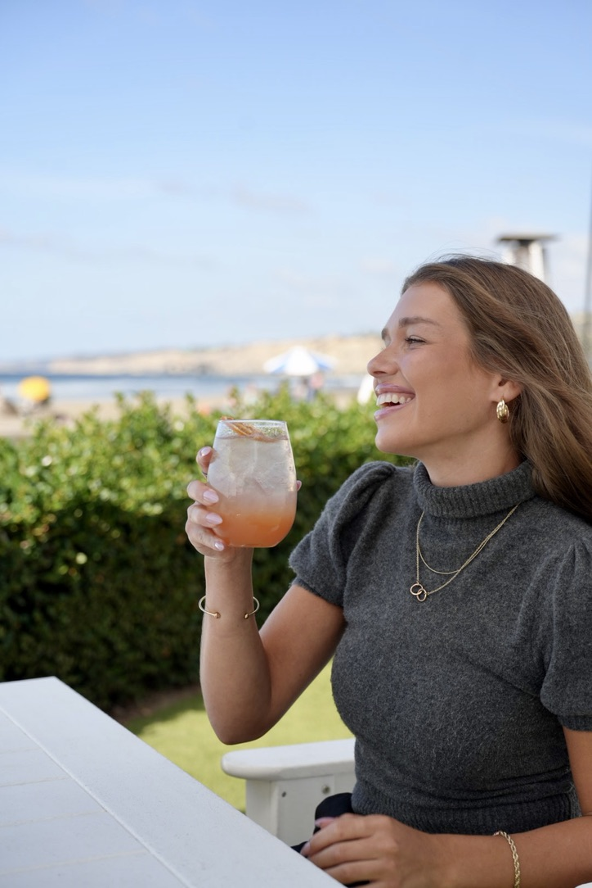

Hospitality & Aerial Photography
Interiors, grounds, and aerial work for hotels, lodges, and private rentals — made for the places a booking is decided: your own site, the listing pages, and the moment someone is choosing between you and the property down the road.
Ground & Air · Available for travel
The difference
Most properties are not losing to a better hotel. They are losing to a better-lit one — a beautiful room shot at noon with the curtains shut, a pool photographed in flat grey light instead of at dusk when it glows, grounds that never get shown at all because nobody could get high enough to see them.

Why it matters
A room photograph tells a guest what they are buying. A lifestyle frame tells them how it will feel — someone laughing over a drink as the light goes long, the part of a stay that gets remembered and retold.
These are the frames that work hardest away from your website: on social, in email, in the places a property is discovered rather than booked. They carry a mood instead of a floor plan.
Aerial & Drone
A guest scrolling a listing is asking questions your ground-level photographs cannot answer. How big is this place. What is around it. How far is the water, the lift, the vineyard, the old town. Is that pool the centre of the resort or an afterthought behind the car park.
One aerial frame answers all of it at once, which is why it so often becomes the image a property leads with.
Flown to FAA regulations · Certificate details on request
What I photograph
A hero frame for every room type you sell, with the supporting angles behind it. Curtains open, lamps on, so the room reads warm rather than clinical.
The exterior at blue hour, when the interior lights balance the last of the sky. Usually the single most valuable frame a property owns.
Scale, setting, and proximity from overhead — plus the elevated angles that sit between a rooftop and a helicopter.
Front desk, lounge, corridors, and the sequence of arriving. The spaces that set an expectation between the car park and the room.
Breakfast service, the bar in the evening, plated dishes and the room in use — shot on your service schedule, so nothing is staged twice.
Pool, spa, terrace, fitness, event space and gardens, including the dusk frames that turn an ordinary amenity into a reason to book.
Justin Close
About
Justin Close Media is new, and I would rather say so than pad this page with claims you cannot check. What being new actually buys you: you work with the person holding the camera, I have the time to plan a shoot properly around how your property runs, and I will care about your gallery more than a busy studio can — because for now, your photographs are my portfolio.
I photograph hospitality because the constraints are the interesting part. A room has to look honest and inviting at the same time. You cannot move a wall, the light arrives when it arrives, and housekeeping needs the floor back by two. Working well inside all that is the job.
If you are a property that wants attention paid to it, I am the right call. If you need forty locations covered next week, I am not — not yet.
How a booking runs
We walk the property together, agree which room types are worth covering, and find where the good light lands and at what hour.
You have the list before I arrive — every frame, and when each space needs to be free. Housekeeping gets a copy too.
Ground work around occupancy and service, aerials in the right wind and light, facade last as the sky turns. Rooms left as found.
Edited frames in a private gallery, sized for your site, the listing pages, and print — ready to publish as they are.
Enquiries
Send the property, roughly how many room types you would want covered, whether you want aerial work, and the timing you have in mind. I will come back with availability and a price.